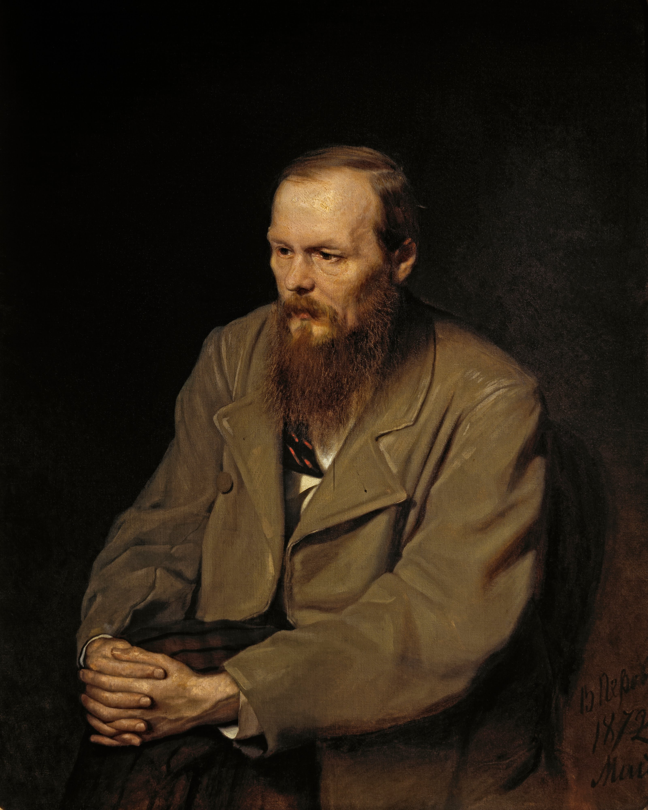

Notes from Underground
1864
A deeply introspective work exploring alienation, consciousness, free will and the contradictions of human nature.
A LITERARY TRIBUTE
1821-1881
Russian novelist and thinker whose works explored morality, faith, suffering, freedom, and the depths of human psychology.
Expoler His Life
01-HIS LIFE
Fyodor Mikhailovich Dostoevsky was born in Moscow in 1821. He became one of the most influential Russian novelists of the nineteenth century.
His life was marked by dramatic experiences, including imprisonment, a sentence of death that was commuted at the last moment, years of exile, and personal struggles that deeply influenced his writing.
These experiences became closely connected with the themes explored throughout his novels: morality, guilt, suffering, faith, freedom, and the complexity of the human mind.
02-THE JOURNEY
Fyodor Mikhailovich Dostoevsky was born on October 30, 1821, in Moscow, Russian Empire.
Dostoevsky was arrested for his involvement with the Petrashevsky Circle. He was sentenced to death, but the sentence was commuted at the last moment.
After years of imprisonment and exile in Siberia, Dostoevsky returned to literary life and continued his writing career.
He published Notes from Underground, a work that became an important precursor to his later psychological and philosophical novels.
One of Dostoevsky's most famous novels, Crime and Punishment, was published. It explores guilt, morality and redemption.
His final major novel, The Brothers Karamazov, was published. It brought together many of the philosophical and moral questions that defined his writing.
Dostoevsky died on January 28, 1881, in Saint Petersburg at the age of 59.
03-THE WORKS
1864
A deeply introspective work exploring alienation, consciousness, free will and the contradictions of human nature.
1866
The psychological story of Raskolnikov and his struggle with guilt, morality and the consequences of his actions.
1869
A novel centered on Prince Myshkin and the tension between innocence, compassion and the complexities of society.
1872
A politically and philosophically charged novel examining revolutionary ideas, ideology and social conflict.
1867
A compact novel dealing with obsession, gambling, desire and the psychological forces behind compulsive behavior.
1880
His final major novel, exploring family, faith, doubt, morality and responsibility through the lives of the Karamazov brothers.
04-THE LEGACY
"The mystery of human existence lies not in just staying alive, but in finding something to live for."
Dostoevsky's novels continue to be studied because they examine questions that remain deeply relevant: How should people live? What happens when morality conflicts with desire? Can suffering transform a person? What role do faith, freedom and responsibility play in human life?
His characters are often placed in situations where psychological, moral and philosophical conflicts intersect. This approach helped make his fiction influential far beyond nineteenth-century Russian literature.